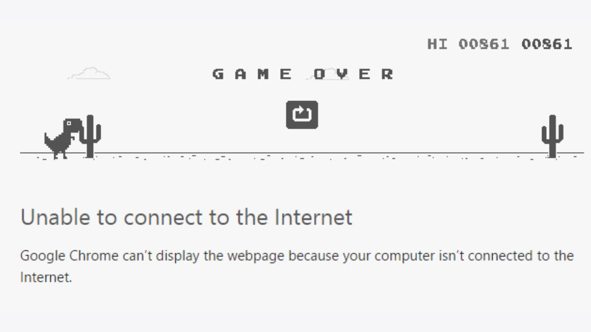
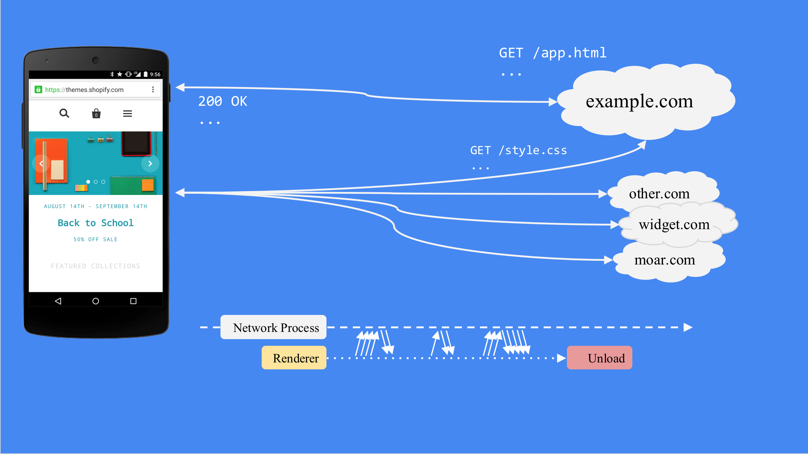
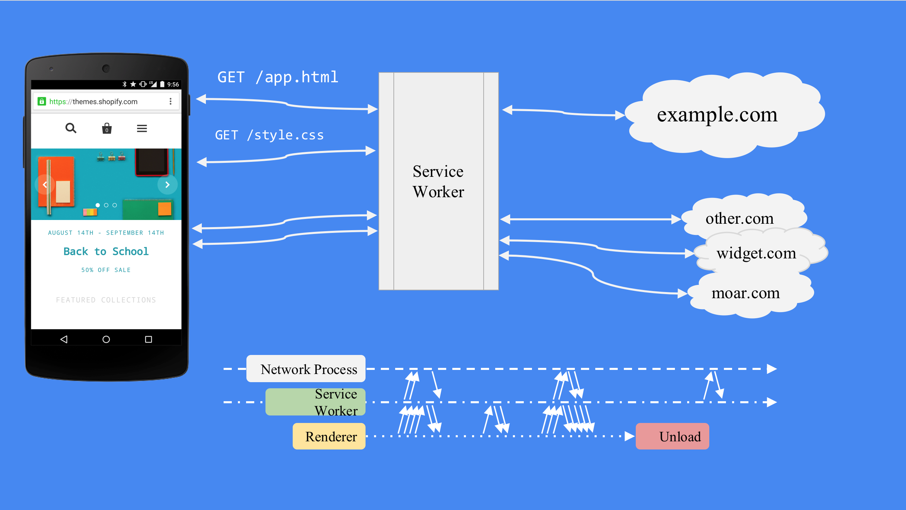
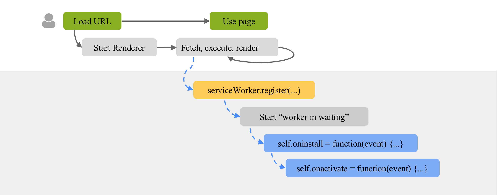
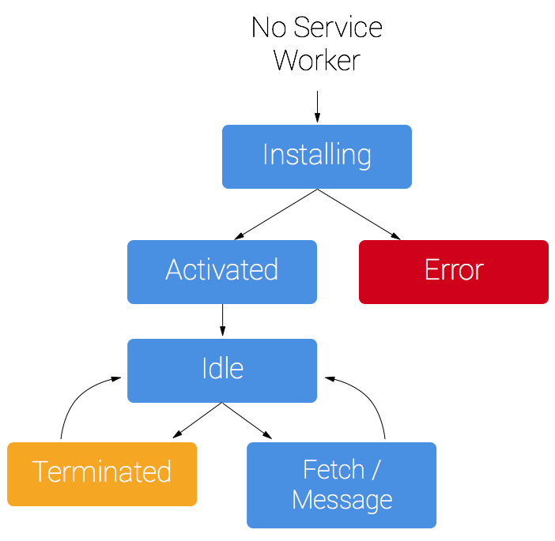
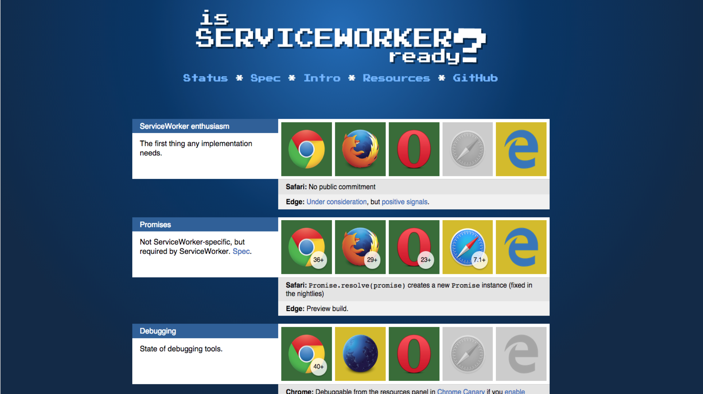

Progressive Web Apps
With React
Progressive Web Apps
Best of the Web & best of the native apps
Progressive Web Apps
App-Like
Progressive Web Apps
Immersive
Progressive Web Apps
Re engageable
Progressive Web Apps
Connectivity independent
Progressive Web Apps
Safe
Progressive Web Apps
Progressively builds a relationship
Offline

Offline
Being offline is not an error
Offline
Network is not always reliable
Offline
Lie-Fi
Offline
Offline Caching
Offline
LocalStorage/SessionStorage
Offline
IndexedDB
Offline
PouchDB
Service Worker
Service Worker
It is a web worker
Service Worker

Service Worker

Service Worker

Service Worker

Why React?
Why React?
Application with data(that changes over time)
Why React?
Presentation layer
Why React?
Conceptually hits the refresh button
Why React?
App Shells
Why React?
Website = f(data)
Why React?

DEMO TIME
twitter.shafeeqonline.com
Browser support

What else does PWA offers?
What else does PWA offers?
Add to home screen
What else does PWA offers?
Web App Manifest file
What else does PWA offers?
Frequency heuristics
What else does PWA offers?
Push notifications
What else does PWA offers?
Google cloud messaging platform
So why not Offline-first???
Q & A??
Thank you